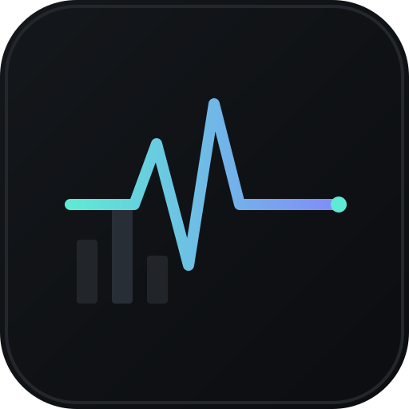

| 1h | 24h | 7d | 30d | 60d | 90d |
|---|
is_activecmc_rankmarket_capA full dashboard (value, P&L, sectors, concentration, correlation) from one free, keyless endpoint.
Symbol lookups return every ticker collision. Worth a documented is_active / cmc_rank recipe in the quick-start.
The shared keyless pool exhausts fast in an edit-and-refresh UI, which pushed us to incremental fetching + 429 backoff.